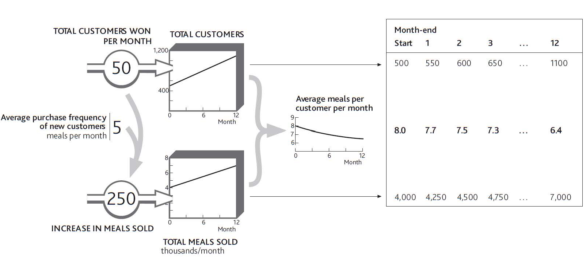

If we are to add a clear picture of resource attributes to our strategic architecture, we need to capture their dynamics accurately. Three mechanisms cause attribute levels to change:
These three mechanisms are all positive, raising the quality of the resource in question, but each has a negative counterpart. An attribute may simply decline, as when staff forget key skills, be diluted by adding lower quality items (hiring unskilled staff), or disappear, as when a high-quality resource is lost (losing skilled staff).
This process is captured by a framework known as a “coflowA framework of assessing and managing attributes by viewing the inflow of a given resource relative to the connected flow of its attributes.,” so called because the inflow of a given resource (staff, say) brings with it a connected flow of its attribute (their skill). Similar effects occur for many other resources in many other contexts (Sterman, 2000, chap. 12).
A helpful way to think about an attribute builds on the idea of resources as water in a bathtub. You can think of the attribute as the heat the water holds:
Let us go back to the example of your restaurant from earlier chapters. Imagine that it starts to win more customers, but these new customers eat with you less often than your regulars do (Figure 6.4 "Dilution of Average Client Quality"). Regular customers all visited eight times per month, but these new people only visit five times per month. After one month of adding 50 customers per month, you now have 550 regulars. If they visited as often as the 500 initial customers, you would be selling at the rate of 4,400 meals per month. Instead, these 50 new people bring just 250 extra meals per month, so on average your customers are now visiting just over 7.7 times per month.
This framework does have an important limitation, in that you lose some of the detail by lumping all these customers together. Inside the stock of 550 customers at the end of month 1, for example, there may be some making 12 visits per month, others 10 per month, others 8 per month, and so on. To see this detail you would need to build a quality curve like that in Figure 6.2 "Revenue-Generating Profile of a Customer Base". But this can mean extra work, so explore the detailed resource quality profile (Figure 6.2 "Revenue-Generating Profile of a Customer Base") only if it is essential to answer the specific issue of concern.
Figure 6.4 Dilution of Average Client Quality
You might think that the easiest way to work out these attributes is to put their average quantity in the stock that “coflows” with the resource. In Figure 6.4 "Dilution of Average Client Quality", surely you should show the average meals per customer in the resource tank instead of the total meals sold per month. Unfortunately it is very difficult to work out the numbers that way.
The lower tank in such cases (total meals sold per month) is keeping a check on the total heat in your bathtub. This can have some curious effects. For example, if you want to track employees’ average experience, your resource stock carries the number of staff, say 200, and the lower stock carries their total combined experience: say 2,200 person-years. The average experience is thus the resource quantity divided by the attribute quantity, that is, 2,200/200 = 11 years.
A further result of this approach is that it can lead you seemingly to break the rules of what is or is not a resource. Telecom firms, for example, track average revenue per user (ARPU). If you have 1.5 million subscribers, each giving you an average of $40 per month in revenue, then the 1.5 million subscribers go in the top tank, but the bottom tank holds $60 million per month, that is, your total revenue. ARPU is thus the ratio between these two stocks. “But surely,” you may remind us, “we agreed in Chapter 2 "Resources: Vital Drivers of Performance" that revenue is not a resource?” It is not; we are using it here only to track an important quality of the subscribers.
If the telecom firm wants a higher ARPU, it has three options: increase the average revenue from existing customers, add higher usage customers, or lose low-revenue customers.